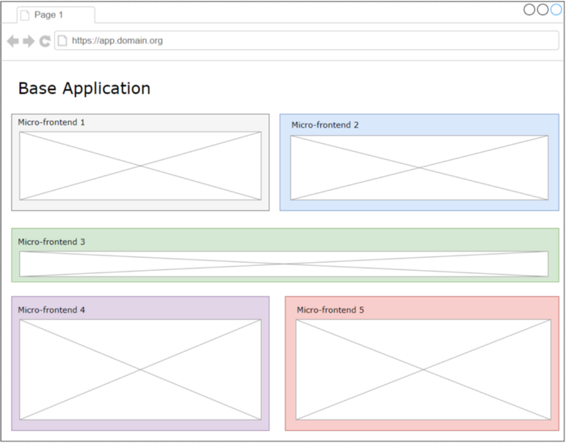

Séminaire dev Insee 2020
Micro-frontend
Laurent Caouissin
Micro-frontend
technique de découpage d'application JS
Qu'est ce que c'est ?
Les Micro-Frontends reprennent le concept d'architecture des micro-services, et l'appliquent au développement frontal.
Pourquoi faire ?
- Applications monolithes : difficiles à gérer, maintenir ou moderniser
- Trouver un moyen de réduire les coûts
- Les micro-services sont nés dans les "back-office"
Principes
- Concept architectural
- Pas de cadre/norme ou d'APIs définis
- Une seule régle : diviser l'application en plusieurs, chacune ayant son dépôt, centrée sur un lot de fonctionnalités
Pour l'utilisateur final : une seule application

Au niveau de l'UI
Quels sont les avantages de découper ?
- Séparation des équipes de développement 👍
- Séparation des cycles de vies des applications 👍
- Choix des versions des frameworks frontend libres pour chacune des sous-applications : React, Angular, VueJs 👍
Concrêtement : comment ça marche ?
Plusieurs possibilités avec les téchnologies web actuelles
- iframe 🤮
- Routage serveur
- Intégration au build 😉
- Intégration au runtime 🥰
Les Web Components & le Shadow Dom
Intégration au runtime
"The Dom is the API"
class MyWebComponent extends HTMLElement {
connectedCallback() {
this.innerHTML = My new webComponent
}
disconnectedCallback() { ... }
}
window.customElements.define("my-webcomponent", MyWebComponent);
}
Le shadow Dom
Le shadow Dom permet d'encapsuler le JavaScript et le CSS des éléments HTML créés
La page HTML ne peut pas intéragir avec le composant "shadow" => il est protégé 👍

Shadow dom
- Permet d'éviter les interférences entre les fichiers JavaScript 👍
- Permet donc d'utiliser plusieurs frameworks (ou version de framework) au sein de la même application 👍
- Permet d'éviter que les styles des un écrasent le style des autres 👍
Communications : The Dom is the API
- via l'url
- via les attributs html
/* Ecoute les évnènements de type 'myEvent' */
element.addEventListener(
'myEvent',
(msg, data) => { /* ... */ }
);
/* Envoi un évnènement de type 'myCustomEvent' */
element.dispatchEvent(
new CustomEvent('myCustomEvent')
);
Besoins Metallica
Poste de collecte enquêteur
2 besoins principaux
- Organiser la collecte
- Accueillir des questionnaires de collecte (générés à partir des métadonnées)
1. Organiser la collecte
- Application de gestion
- Adhérent à l'organisation de l'Insee
- (cycle de vie des unitées enquêtées, ...)
2. Collecter de la données
L'application est:- réutilisable au sein du SI Collecte (Pogues visualisation, outils de gestions pour le contrôle qualité)
- unique, non adhérente aux questionnaires
- orchestre des questionnaires issues de la filière générative Pogues/Eno/Lunatic
Bilan
On découpe le poste de collecte enquêteur en 2 applications
Cela permet en plus:
- D'avoir des cycles de vies d'application différentes
- Equipes de développement/maintenance séparées
Démonstration
C'est open-source et déployé sur le sspcloud
Pearl : https://pearl.demo.dev.sspcloud.fr
Queen : https://queen.demo.dev.sspcloud.fr
Problématiques
- L'authentification au sein des deux applications
- Les CORS 😭
Bonus : Micro-frontend x PWA
Le poste de collecte doit fonctionner hors ligne.Nous avons donc mixer les deux technologies (assez simplement 😁)
Rappel PWA
Les PWA sont des applications pouvant fonctionner hors ligne grâce aux service-worker.Il "suffit" donc de combiner les service-worker des deux applications !
/* Dans l'application principale */
const swUrl = `${window.location.origin}/service-worker-custom.js?QUEEN_URL=${config.QUEEN_URL}`
navigator.serviceWorker.register(swUrl)
/* dans le service-worker-custom.js de l'application */
self._QUEEN_URL = new URL(location).searchParams.get('QUEEN_URL');
importScripts('/service-worker.js', `${self._QUEEN_URL}/queen-service-worker.js`);